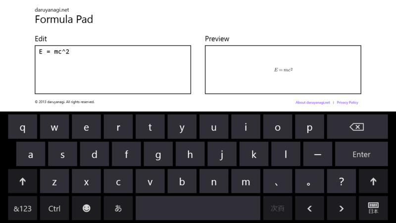
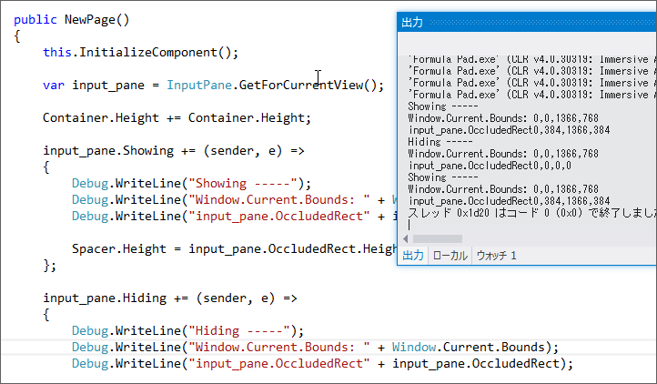
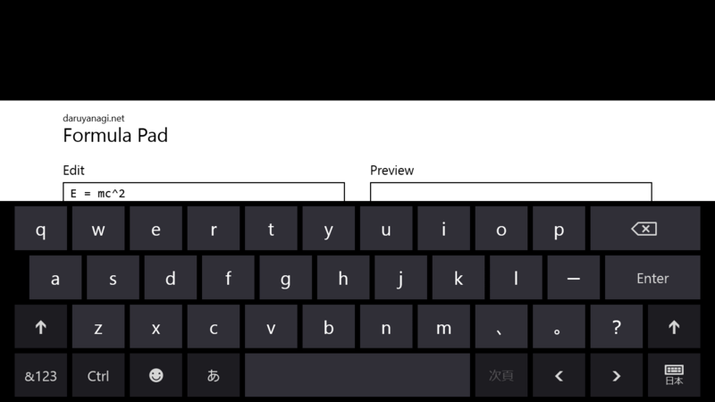
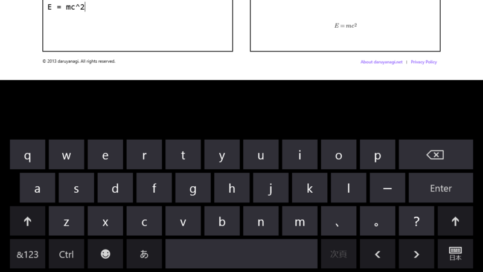
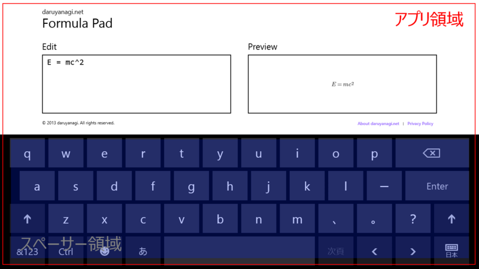
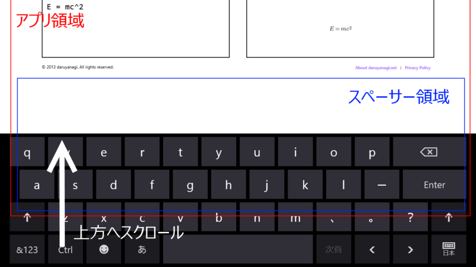

Windows Store Apps： オンスクリーンキーボードの存在を考慮したレイアウト（未解決 → 解決）
公開日：

Formula Pad 1.1.0 for Windows 8 - だるろぐ は大失敗だった。オンスクリーンキーボード（ソフトウェアキーボード）を表示した状態では、肝心の数式プレビューが見えないことがある。

理想としてはこうなってほしいわけだが。
InputPane によるオンスクリーンキーボードイベントと領域の取得

一応 InputPane Class (Windows.UI.ViewManagement) - Windows UWP applications | Microsoft Docs を利用すればオンスクリーンキーボードの表示・非表示は取得できるというのはわかった。
var input_pane = InputPane.GetForCurrentView();input_pane.Showing += (sender, e) => { Debug.WriteLine("Showing —–"); Debug.WriteLine("Window.Current.Bounds: " + Window.Current.Bounds); Debug.WriteLine("input_pane.OccludedRect" + input_pane.OccludedRect); };
input_pane.Hiding += (sender, e) => { Debug.WriteLine("Hiding —–"); Debug.WriteLine("Window.Current.Bounds: " + Window.Current.Bounds); Debug.WriteLine("input_pane.OccludedRect" + input_pane.OccludedRect); };
オンスクリーンキーボード表示の際のアニメーション
しかし、これを利用して Page の高さを操作しても、期待通りの動作はしない。

初期表示。画面をスクロールして位置を補正することはできない。

オンスクリーンキーボードを一度非表示にして表示。画面をスクロールして位置を補正することは可能。
オンスクリーンキーボードキーボードの出し入れで、アプリがアニメーションして上に移動するのが邪魔なのだけど、それを無効化するにはどうすればいいのだろうか。たとえば「Internet Explorer 10」などはこのアニメーションが無効化されているようなので、やり方はあるような気がするのだけど。
暫定の修正案
とりあえず、今回は「オンスクリーンキーボードを表示したときのみスペーサーとなるグリッド列を用意する」という方法をとった。

初期表示。

オンスクリーンキーボードを一度非表示にして表示。
上に少しズレているが、スクロールして戻せる。これで当分は我慢することにする。
解決
諦めきれず電子の海をさまよっていたら、浴衣の似合う漢のサイトに答え（Windows ストアアプリ (旧 Metro スタイルアプリ) でスクリーンキーボードのサイズにあわせて画面を調節する。 | みむらの手記手帳）が書いてあった。
input_pane.Showing += (sender, e) =>
{
Debug.WriteLine("Showing -----");
Debug.WriteLine("Window.Current.Bounds: " + Window.Current.Bounds);
Debug.WriteLine("input_pane.OccludedRect" + input_pane.OccludedRect);
Spacer.Height = input_pane.OccludedRect.Height + 36;
e.EnsuredFocusedElementInView = true;
};
このプロパティが false の場合、Windows では、入力ウィンドウがフォーカスのある要素に重ならないようにします。
つまり、true にしておけば勝手にスクロールしない。なるほど。